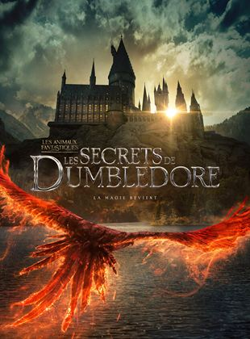

- Inicio
- Em cartaz
EM CARTAZ
Melhores filmes em Cartaz:
Doutor Estranho No Multiverso da Loucura

O Mago Supremo, Stephen Strange (Benedict Cumberbatch) e seu parceiro Wong (Benedict Wong) precisam enfrentar uma poderosa e misteriosa ameaça.
Animais Fantásticos: Os Segredos de Dumbledore
Animais Fantásticos: Os Segredos de Dumbledore é a sequência das aventuras de Newt Scamander (Eddie Redmayne), que conecta de vez o mundo de Newt Scamander e Harry Potter e aprofunda a vida do lendário Diretor de Hogwarts, Dumbledore.
Sonic 2 - O Filme.

Após os eventos do primeiro filme, Dr. Robotnik volta mais uma vez para conquistar o mundo, mas ele não está sozinho. Sonic agora enfrenta uma corrida contra o tempo para achar uma esmeralda que Robotnik está à procura, e ele precisará de novos amigos para ir nessa jornada.
Cidade Perdida.
Uma romancista e seu modelo de capa de livro estão em um tour quando se veem sequestrados e em uma incrível aventura.